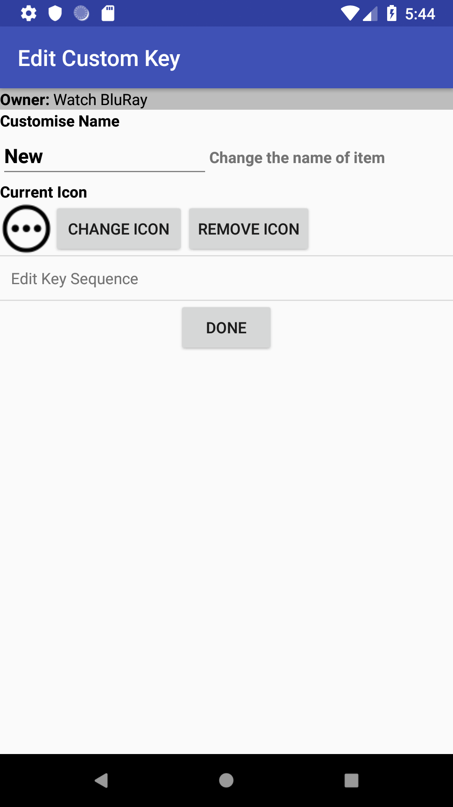

    <div class="container content">
      {% assign prev_page = "Change Icon" %}
      {% assign prev_href = "changeicon.html" %}
      {% assign next_page = "Key Sequences" %}
      {% assign next_href = "keyseq.html" %}
      {% include usergnav.html %}

      <div class="row">
        <div class="col-lg-7">
          <h2 class="page-title">Custom Keys</h2>
          <p>Custom Keys can be added to any <a href="activityremote.html">Activity Remote</a>. These Keys allow you to program your own <a href="keyseq.html">Key Sequences</a> or 'Macros', allowing you to define your own special to purpose Keys.</p>
          <p>When creating or editing a custom key you will see a screen similar to that shown in the figure.</p>
          <p>Here you can decide:</p>
          <ul id="bullets">
            <li>The Key name (displayed if no icon selected),</li>
            <li>The icon that should be displayed for this Key, and</li>
            <li>The <a href="keyseq.html">Key Sequence</a> to be transmitted when the key is pressed.</li>
          </ul>
          <p>Once you set these items as required press the <i>Done</i> button to complete the process.</p>
          <p>Pushing the <i>Back</i> button at any time will cancel the operation.</p>
        </div>
        <div class="col-lg-5">
          <div class="row spacer4 d-none d-lg-block"></div>
          <p class="aligncenter"></p>
        </div>
      </div>
      {% include usergnav.html %}
    </div>
